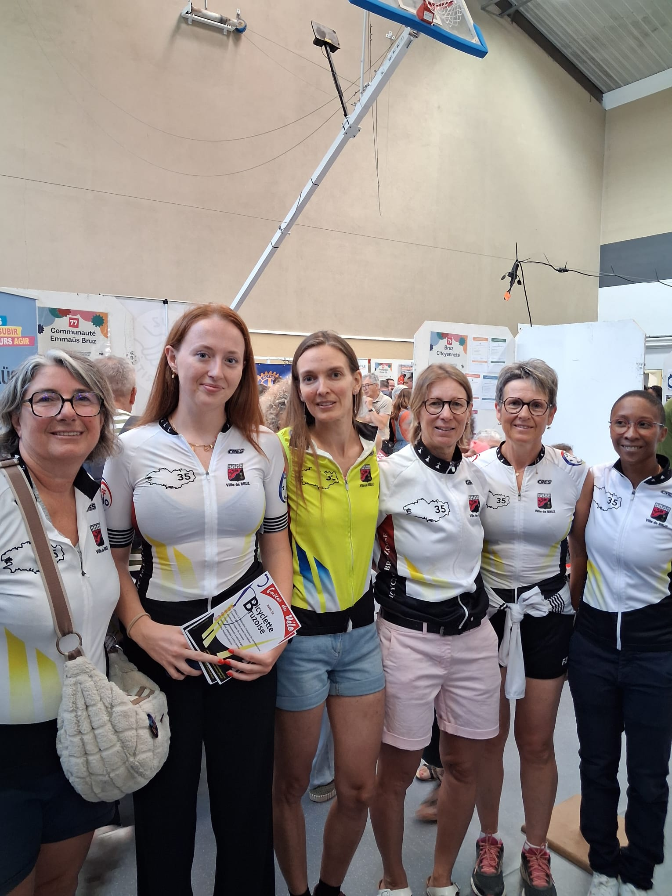
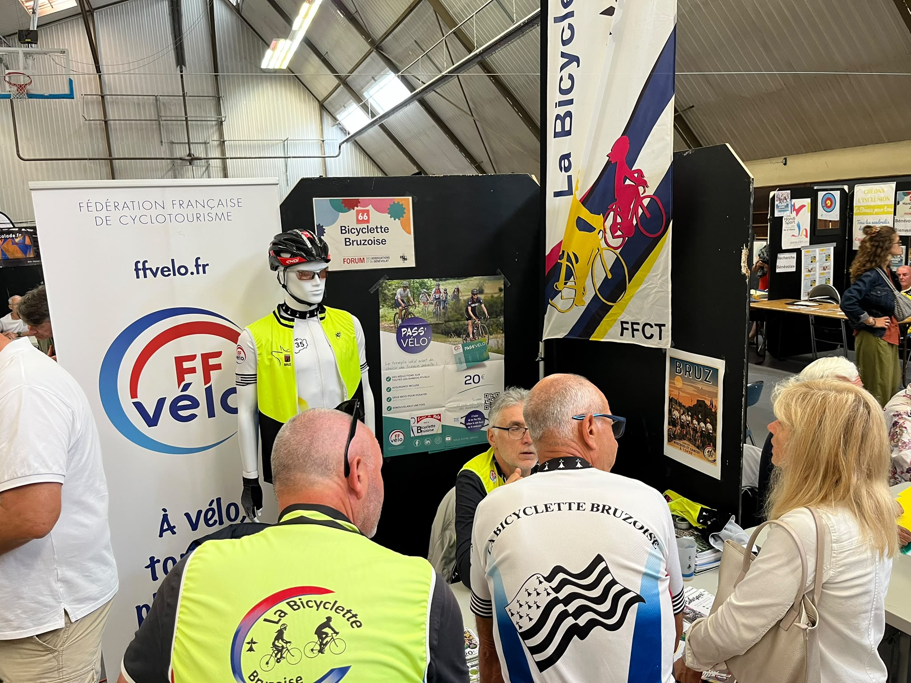

Forum des associations 2026
La Bicyclette Bruzoise était présente au Forum des associations de Bruz. Une matinée riche en rencontres, en échanges et en convivialité, avec une belle mobilisation des bénévoles venus présenter le club et partager leur passion du vélo.


Le club maintient une belle dynamique.
Grâce à la disponibilité, à l'implication et à la bonne humeur de l'équipe présente, les personnes intéressées par la Bicyclette Bruzoise ont pu obtenir les renseignements recherchés et laisser leurs coordonnées nous permettant ainsi de les recontacter.
Une belle image du club
Au-delà des chiffres, cette matinée a surtout permis de montrer ce qui fait l'esprit de la Bicyclette Bruzoise : un club dynamique, accueillant et convivial, où chacun peut trouver sa place.
Un grand merci à tous les adhérents présents pour leur temps, leur énergie et leur engagement tout au long de la matinée.
C'est tous ensemble que nous faisons vivre et avancer la Bicyclette Bruzoise.
Bravo à toutes et à tous, et encore un immense merci !